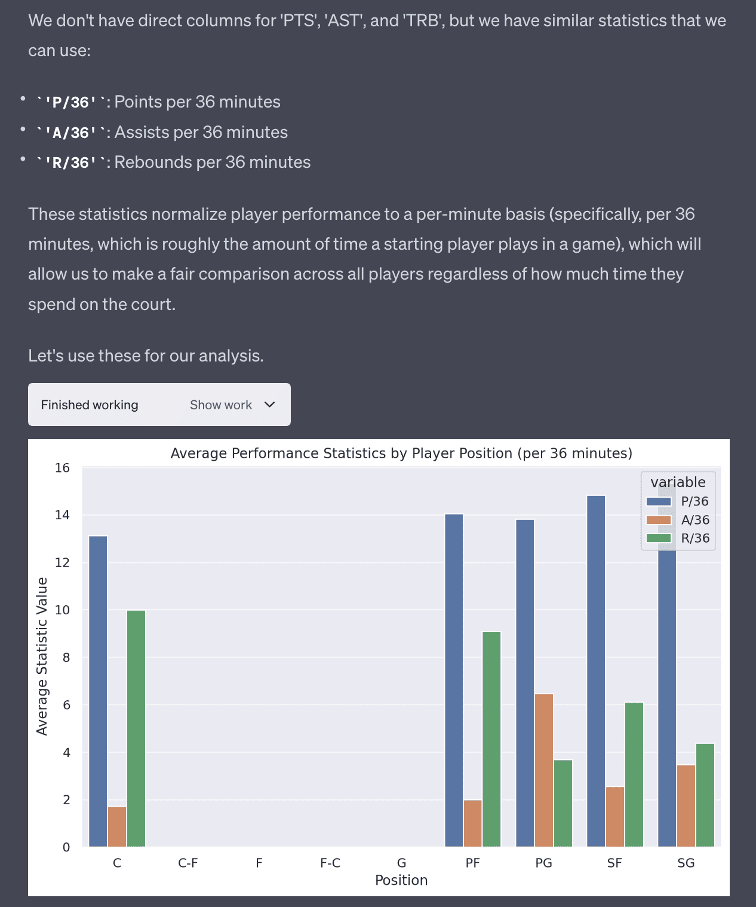
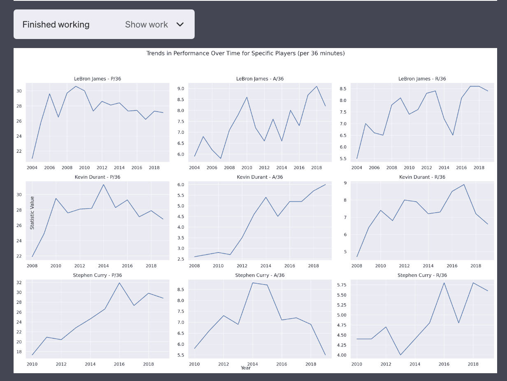
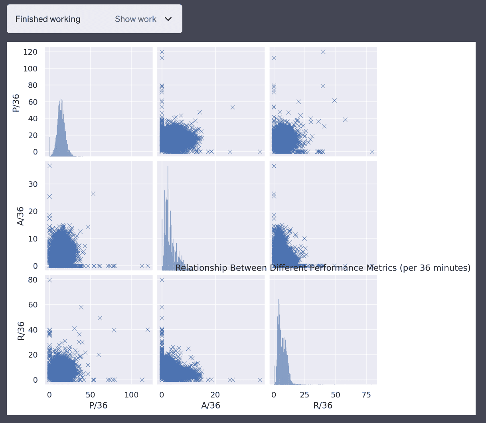
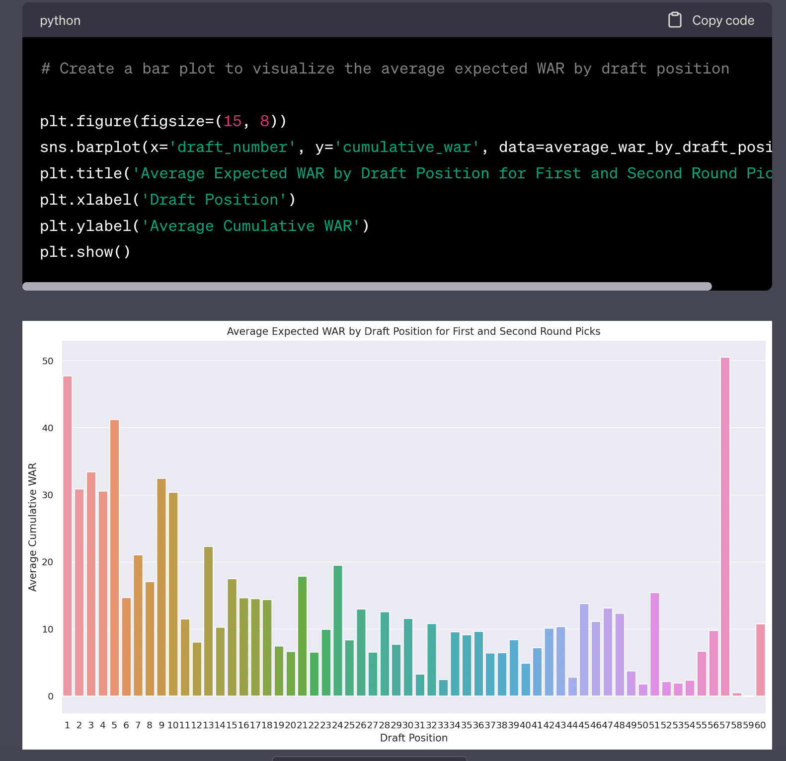
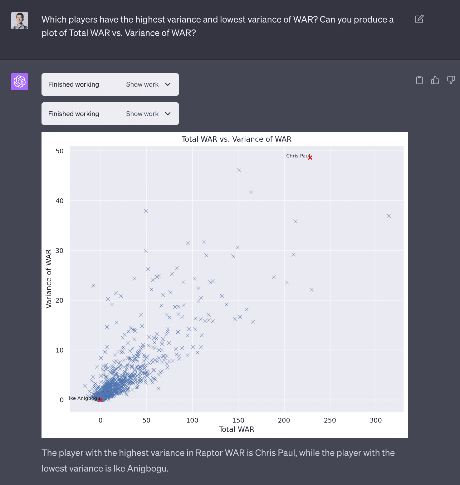

import pandas as pd
# Load the dataset
df = pd.read_csv('/mnt/data/nba-data-historical.csv')
# Display the first few rows of the dataframe
df.head()
# player_id name_common year_id type age team_id pos tmRtg franch_id \
# 0 youngtr01 Trae Young 2020 RS 21 ATL PG NaN ATL
# 1 huntede01 De'Andre Hunter 2020 RS 22 ATL SF NaN ATL
# 2 huertke01 Kevin Huerter 2020 RS 21 ATL SG NaN ATL
# 3 reddica01 Cam Reddish 2020 RS 20 ATL SF NaN ATL
# 4 collijo01 John Collins 2020 RS 22 ATL PF NaN ATL
# G ... BLK% ORtg %Pos DRtg 2P% 3P% FT% 3PAr FTAr Pace +/-
# 0 60 ... 0.3 NaN NaN NaN NaN NaN NaN 45.5 44.8 2.9
# 1 63 ... 0.7 NaN NaN NaN NaN NaN NaN 44.5 21.1 0.0
# 2 56 ... 1.3 NaN NaN NaN NaN NaN NaN 54.8 10.5 0.1
# 3 58 ... 1.5 NaN NaN NaN NaN NaN NaN 45.1 22.7 0.9
# 4 41 ... 4.1 NaN NaN NaN NaN NaN NaN 24.3 24.8 0.1
# [5 rows x 42 columns]Code Interpreter & Data Analysis
LLMs
Agents
Data Analysis
Data Science
Code Interpreter
In this post I’ll go over some observations I’ve had while using OpenAI’s Code Interpreter for the first time. It is not available as an API, rather only through the ChatGPT web interface for ChatGPT Plus subscribers ($20/month).

If you aren’t familiar with Code Interpreter, it is:
- ChatGPT hooked up to a Python interpreter
- You can upload (limited to 100MB, though you can zip files) and download files
Really the only change is a “+” button in the ChatGPT interface but this small change unlocks quite a bit of use cases. One of which is data analysis since you can upload data and have the LLM analyze and reason over it.
Overall I am quite impressed with Code Interpreter’s capabilities. I would characterize Code Interpreter as a very capable intern whose output you need to validate. That being said it is a very capable agent in doing data analysis tasks. I would estimate this analyses took me 20 minutes to do. If I actually wanted to do it, I’d estimate it would’ve taken me 2 hours, so 6x longer. But it’s not just a matter of time savings, it is a matter of cognitive-load savings. It was not very cognitively-intense to use Code Interpreter whereas I, a human, doing these analyses would’ve taken me a lot of mental energy. Because of that, I’d held off on running this type of analyses for a long time (sitting on this idea for a year?) but with Code Interpreter, I was able to do it in 20 minutes. And this opens up many other analyses that I would love to do but have not had the time or energy to do.
Code Interpreter
OpenAI released Code Interpreter to the public on July 7, 2023. Code Interpreter is GPT-4 hooked up with a Python interpreter with a bunch of different libraries. You can upload any file, CSV files, zipped git repositories, you name it. Given the file you upload and GPT-4, this unlocks quite a bit of use cases. If you haven’t seen any before, Ethan Mollick has a bunch of examples here on his Substack.
Someone posted the requirements.txt file for Code Interpreter here. It has common libraries like:
- numpy
- pandas
- scikit-learn
- matplotlib
- seaborn
- tensorflow
- pytorch
- nltk
- spacy
- gensim
There’s been a lot of chatter on whether Code Interpreter and models like it will take over data science and data analyst jobs. I don’t think that will necessarily happen so soon. I think expert data analysts and data scientists with a tool like Code Interpreter can be much more productive. I haven’t used Code Interpreter for very long but right now I see it as a very obedient and capable intern that has a surprising amount of knowledge. You wouldn’t productionize code that an intern wrote without a thorough review, nor would you share the results of a data science interns analysis or model without also a thorough review. The same applies to Code Interpreter.
But let me share the results of my first experiment with Code Interpeter and it’s ability to do data analysis.
NBA Data Analysis (Part 1) - Anything interesting?
I’m a fan of the NBA. So one dataset I started with a dataset that had player statistics by year for every NBA player where every row is a player-year. I downloaded this 5.5mb file and uploaded it to Code Interpreter.
The code Code Interpreter runs in its own Python sandbox is by default hidden, you can click show work and there’s runnable code! This could be a great training tool for junior data analysts and data scientists. One somewhat surprising thing is this is just a CSV file with no metadata but Code Interpreter was able to infer not just the column data types (which Pandas does already) but the meaning if each column (e.g. “3P%” means 3-point percentage). It’s probably based on the colunmn name and the fact I prompted it that it was an NBA related dataset.
But based on “seeing” the first 5 and last 5 rows of the dataset, the agent actually generates 5 interesting questions:
- The distribution of players’ ages.
- The average performance statistics (like points, assists, rebounds) by player position.
- Trends in performance over time for specific players.
- Comparison of teams based on average player statistics.
- The relationship between different performance metrics (like points and assists).
so naturally I ask it to run all 5 of them.
1. Distribution of players’ ages
The first use case was simple and the agent was able to do this correctly.

2. The average performance statistics (like points, assists, rebounds) by player position.
The second use case was more interesting in the sense it ran into an error producing this analyses but was able to debug itself. It realized the column names were wrong and it was able to find the correct column!
After fixing the issue and finding that the column is P/36 and not PTS, it was able to produce the correct plot.

3. Trends in performance over time for specific players.
The third use case is more complicated but Code Interpreter is able to produce this plot without any issues. You can see the code is more complex and not that trivial to write.
# 3. Trends in performance over time for specific players
# For this plot, let's pick a few popular players to analyze
players_to_analyze = ['LeBron James', 'Kevin Durant', 'Stephen Curry']
# Filter the dataframe for the selected players
player_df = df[df['name_common'].isin(players_to_analyze)]
# Create a list of statistics to analyze
stats_to_analyze = ['P/36', 'A/36', 'R/36']
# Initialize the plot
fig, axes = plt.subplots(len(players_to_analyze), len(stats_to_analyze), figsize=(18, 12))
# Create a subplot for each player and each statistic
for i, player in enumerate(players_to_analyze):
for j, stat in enumerate(stats_to_analyze):
player_stat = player_df[player_df['name_common'] == player][['year_id', stat]].dropna()
axes[i, j].plot(player_stat['year_id'], player_stat[stat])
axes[i, j].set_title(f'{player} - {stat}')
# Add labels and title
fig.text(0.5, 0.04, 'Year', ha='center', va='center')
fig.text(0.08, 0.5, 'Statistic Value', ha='center', va='center', rotation='vertical')
plt.suptitle('Trends in Performance Over Time for Specific Players (per 36 minutes)')
plt.tight_layout(rect=[0.03, 0.03, 1, 0.95])
plt.show()
4. Comparison of teams based on average player statistics.
This plot is not very good as it’s a side-by-side bar chat which makes it difficult to compare teams.
5. The relationship between different performance metrics (like points and assists).
This is also not a very good plot but it’s a valiant attempt.

Explaining itself
I’m surprised that Code Interpreter is able to explain itself. I think it’s able to do this by “looking” and examining the plots because that’s the only thing the interpreter is generating. The intermediate datasets are generated but not printed out. This is not something I’m completely sure how it’s doing it but it’s pretty amazing.
Improving number 4 - team statistics
After a couple rounds of modification, I was able to get Code Interpreter to produce a sorted bar chart of team statistics that made it easier to interpret. I found it surprising that some teams like the New York Knicks have some low assists per 36 minutes. It seems like assists are more variable than points and rebounds (which I didn’t know before!).

NBA Data Analysis (Part 2) - Joining Data
I found another dataset that had every player’s draft year, round and number. I uploaded it to Code Interpreter. The LLM was smart enough to name the dataframe as df_new so it didn’t overwride df from the previous analysis.

With this data, I was interested in seeing if Code Interpreter could join the two datasets and do an analysis that I’ve always been interested in, are some teams better at drafting (and developing) players? One way to estimate this is to look at the average cumulative WAR (wins above replacement) for players drafted by each team.
Joining datasets
I was surprised the LLM was able to join the two datasets because it was not a trivial join where the column names from both tables were the same. You can see it had to extract season from the year_id and then it uses a compound key to join the two tables.
# Merge the two datasets on player name and season/year
# First, we need to create a 'season' column in the first dataset to match with the second dataset
# Extract the season year from 'year_id'
df['season'] = (df['year_id'] - 1).astype(str) + '-' + df['year_id'].astype(str).str[-2:]
# Merge the two datasets
df_merged = pd.merge(df_new, df[['name_common', 'season', 'Raptor WAR']],
left_on=['player_name', 'season'],
right_on=['name_common', 'season'],
how='left')
# Display the first few rows of the merged dataframe
df_merged.head()Average Cumulative WAR by draft position
The LLM produces a fascinating plot with the average cumulative WAR by draft position. You can see the #1 draft pick has a very high average cumulative WAR. There is a strange outlier with #57 draft pick. I probably could’ve asked Code Interpreter what was going on but I didn’t.

Cumulative WAR
The LLM is able to produce the following plot which is really interesting! It shows the cumulative WAR for each team for their draft picks. In hindsight I dug a little deeper here because some teams may have higher or more draft picks than others so I should’ve applied some normalization but I didn’t.

NBA Analysis (Part 3) - Embeddings
I had another idea to look at embeddings of players to see if it could generate similar players. So I asked Code Interpreter to generate embeddings for each player based on basketball statisics and physical attributes (weight, height).
Keep in mind these are very simple poor-man’s embeddings (PCA with 2 dimensions). If someone really wanted to generate real embeddings you could use OpenAI or sentence-transformers to generate larger more meaningful embeddings but Code Interpreter does not have network access to install new libraries.
In terms of the most similar players to Lebron James, this passes my basketball smell test in that it returns Kobe Bryant, Scottie Pippen, Vince Carter, Draymond Green and Jimmy Butler. This is a key point in that it’s important that the users have some expertise to be able to interpret and validate the results. I, having data literacy, Python and basketball am able to do this.

NBA Data Analysis (Part 4) - Variance of WAR
A question that came up as I was interacting with Code Interpreter. I became interested in identifying players who had high variance WAR. I imagine players that have more consistent WAR are more valuable and should command higher salaries.
These are players that had dramatic fluctations in WAR year over year. I imagine this is probably due to injuries.
I was interested a plot in players that visualized total WAR vs variance in WAR. This would answer questions like which players had really good careers (total WAR) and were consistent (low variance in WAR). It was able to do this. This plot was not very good because there is too much noise.

I asked the LLM to trim the axes and label the points with names. This is common in data analyses tasks where there is this interactive back and forth of seeing the output and iterating to produce a analysis or visualization that makes sense.

Conclusion
Any data scientist that sees this the first time will probably have a small existential crisis, wondering will my job be automated away too?! I think there will still be a need for data scientists to validate the output of LLMs because what product owner would blindly implement a model that was trained by an LLM agent? But I think this is a good example of how LLMs can be used to augment data scientists’ work. This takes Github Copilot’s AI assistance to another level. I see there being a few levels to AI assistance:
- Level 0: No AI assistance
- Level 1: AI assistance that helps you write code, [Github Copilot]
- Level 2: AI agent that helps you write code, can reason and debug itself, e.g.
gpt-3.5-turbo+langchainfrom a previous post - Level 3: An even more intelligent AI agent that can delight you, [OpenAI’s Code Interpreter]
- Level 4: An AI agent that you would trust to run full data analyses, can query it’s own data, train it’s own models [doesn’t exist yet]
For experienced data analysts and data scientists, I can see Code Interpreter being a valuable tool to save time and reduce cognitive load. I’ll probably use it to explore new datasets as it’s basically pandas-profiling on steroids.
Code from Code Interpreter
Below is all of the code generated by Code Interpreter for this NBA data analysis.
NBA Data Analysis (Part 1)
Code
import pandas as pd
# Load the dataset
df = pd.read_csv('/mnt/data/nba-data-historical.csv')
# Display the first few rows of the dataframe
df.head()
# Import necessary libraries
import matplotlib.pyplot as plt
import seaborn as sns
import numpy as np
# Set the style of all graphs to seaborn default
sns.set()
# 1. The distribution of players' ages
plt.figure(figsize=(8, 6))
sns.histplot(df['age'], bins=20, kde=True)
plt.title('Distribution of Players\' Ages')
plt.xlabel('Age')
plt.ylabel('Count')
plt.show()
# 2. The average performance statistics (like points, assists, rebounds) by player position
# NOTE this errors
# Filter out the necessary columns
position_stats = df[['pos', 'PTS', 'AST', 'TRB']]
# Group by player position and calculate the mean
position_stats_avg = position_stats.groupby('pos').mean()
# Reset the index
position_stats_avg = position_stats_avg.reset_index()
# Melt the dataframe for easier plotting
position_stats_melted = pd.melt(position_stats_avg, id_vars='pos', value_vars=['PTS', 'AST', 'TRB'])
# Create the plot
plt.figure(figsize=(10, 6))
sns.barplot(x='pos', y='value', hue='variable', data=position_stats_melted)
plt.title('Average Performance Statistics by Player Position')
plt.xlabel('Position')
plt.ylabel('Average Statistic Value')
plt.show()
# Display the column names
df.columns
# RESULT
# Index(['player_id', 'name_common', 'year_id', 'type', 'age', 'team_id', 'pos',
# 'tmRtg', 'franch_id', 'G', 'Min', 'MP%', 'MPG', 'P/36', 'TS%', 'A/36',
# 'R/36', 'SB/36', 'TO/36', 'Raptor O', 'Raptor D', 'Raptor+/-',
# 'Raptor WAR', 'PIE%', 'AWS%', 'USG%', 'AST%', 'TOV%', 'ORB%', 'DRB%',
# 'TRB%', 'STL%', 'BLK%', 'ORtg', '%Pos', 'DRtg', '2P%', '3P%', 'FT%',
# '3PAr', 'FTAr', 'Pace +/-'],
# dtype='object')
# 2. The average performance statistics (like points, assists, rebounds) by player position
# Filter out the necessary columns
position_stats = df[['pos', 'P/36', 'A/36', 'R/36']]
# Group by player position and calculate the mean
position_stats_avg = position_stats.groupby('pos').mean()
# Reset the index
position_stats_avg = position_stats_avg.reset_index()
# Melt the dataframe for easier plotting
position_stats_melted = pd.melt(position_stats_avg, id_vars='pos', value_vars=['P/36', 'A/36', 'R/36'])
# Create the plot
plt.figure(figsize=(10, 6))
sns.barplot(x='pos', y='value', hue='variable', data=position_stats_melted)
plt.title('Average Performance Statistics by Player Position (per 36 minutes)')
plt.xlabel('Position')
plt.ylabel('Average Statistic Value')
plt.show()
# 3. Trends in performance over time for specific players
# For this plot, let's pick a few popular players to analyze
players_to_analyze = ['LeBron James', 'Kevin Durant', 'Stephen Curry']
# Filter the dataframe for the selected players
player_df = df[df['name_common'].isin(players_to_analyze)]
# Create a list of statistics to analyze
stats_to_analyze = ['P/36', 'A/36', 'R/36']
# Initialize the plot
fig, axes = plt.subplots(len(players_to_analyze), len(stats_to_analyze), figsize=(18, 12))
# Create a subplot for each player and each statistic
for i, player in enumerate(players_to_analyze):
for j, stat in enumerate(stats_to_analyze):
player_stat = player_df[player_df['name_common'] == player][['year_id', stat]].dropna()
axes[i, j].plot(player_stat['year_id'], player_stat[stat])
axes[i, j].set_title(f'{player} - {stat}')
# Add labels and title
fig.text(0.5, 0.04, 'Year', ha='center', va='center')
fig.text(0.08, 0.5, 'Statistic Value', ha='center', va='center', rotation='vertical')
plt.suptitle('Trends in Performance Over Time for Specific Players (per 36 minutes)')
plt.tight_layout(rect=[0.03, 0.03, 1, 0.95])
plt.show()
# 4. Comparison of teams based on average player statistics
# Filter out the necessary columns
team_stats = df[['team_id', 'P/36', 'A/36', 'R/36']]
# Group by team and calculate the mean
team_stats_avg = team_stats.groupby('team_id').mean()
# Reset the index
team_stats_avg = team_stats_avg.reset_index()
# Melt the dataframe for easier plotting
team_stats_melted = pd.melt(team_stats_avg, id_vars='team_id', value_vars=['P/36', 'A/36', 'R/36'])
# Create the plot
plt.figure(figsize=(20, 10))
sns.barplot(x='team_id', y='value', hue='variable', data=team_stats_melted)
plt.title('Comparison of Teams Based on Average Player Statistics (per 36 minutes)')
plt.xlabel('Team')
plt.ylabel('Average Statistic Value')
plt.xticks(rotation=90)
plt.show()
# 5. The relationship between different performance metrics (like points and assists)
# Filter out the necessary columns
performance_stats = df[['P/36', 'A/36', 'R/36']]
# Create a pairplot to visualize the relationships
sns.pairplot(performance_stats)
plt.title('Relationship Between Different Performance Metrics (per 36 minutes)')
plt.show()
# Create separate sorted plots for Points, Assists and Rebounds
# Initialize the figure
fig, axes = plt.subplots(3, 1, figsize=(20, 18))
# Create a bar plot for each statistic
for i, stat in enumerate(stats):
# Filter the data for the current statistic
team_stat = team_stats_avg[['team_id', stat]]
# Sort the values
team_stat = team_stat.sort_values(by=stat, ascending=False)
# Create the bar plot
sns.barplot(x='team_id', y=stat, data=team_stat, ax=axes[i], color='b')
axes[i].set_title(f'Comparison of Teams Based on Average {titles[i]} per 36 minutes')
axes[i].set_xlabel('Team')
axes[i].set_ylabel('Average ' + titles[i])
axes[i].tick_params(axis='x', rotation=90)
# Adjust the layout
plt.tight_layout()
plt.show()NBA Data Analysis (Part 2)
Code
# Load the new dataset
df_new = pd.read_csv('/mnt/data/all_seasons.csv')
# # Display the first few rows of the dataframe
# df_new.head()
# Unnamed: 0 player_name team_abbreviation age player_height \
# 0 0 Dennis Rodman CHI 36.0 198.12
# 1 1 Dwayne Schintzius LAC 28.0 215.90
# 2 2 Earl Cureton TOR 39.0 205.74
# 3 3 Ed O'Bannon DAL 24.0 203.20
# 4 4 Ed Pinckney MIA 34.0 205.74
# player_weight college country draft_year draft_round \
# 0 99.790240 Southeastern Oklahoma State USA 1986 2
# 1 117.933920 Florida USA 1990 1
# 2 95.254320 Detroit Mercy USA 1979 3
# 3 100.697424 UCLA USA 1995 1
# 4 108.862080 Villanova USA 1985 1
# ... pts reb ast net_rating oreb_pct dreb_pct usg_pct ts_pct \
# 0 ... 5.7 16.1 3.1 16.1 0.186 0.323 0.100 0.479
# 1 ... 2.3 1.5 0.3 12.3 0.078 0.151 0.175 0.430
# 2 ... 0.8 1.0 0.4 -2.1 0.105 0.102 0.103 0.376
# 3 ... 3.7 2.3 0.6 -8.7 0.060 0.149 0.167 0.399
# 4 ... 2.4 2.4 0.2 -11.2 0.109 0.179 0.127 0.611
# ast_pct season
# 0 0.113 1996-97
# 1 0.048 1996-97
# 2 0.148 1996-97
# 3 0.077 1996-97
# 4 0.040 1996-97
# [5 rows x 22 columns]
# Merge the two datasets on player name and season/year
# First, we need to create a 'season' column in the first dataset to match with the second dataset
# Extract the season year from 'year_id'
df['season'] = (df['year_id'] - 1).astype(str) + '-' + df['year_id'].astype(str).str[-2:]
# Merge the two datasets
df_merged = pd.merge(df_new, df[['name_common', 'season', 'Raptor WAR']],
left_on=['player_name', 'season'],
right_on=['name_common', 'season'],
how='left')
# Display the first few rows of the merged dataframe
df_merged.head()
# Calculate the cumulative WAR for each player by year
df_merged['cumulative_war'] = df_merged.groupby('player_name')['Raptor WAR'].cumsum()
# Display the first few rows of the updated dataframe
df_merged.head()
# Calculate the average expected WAR for each draft position for the first and second round picks
# Filter the dataframe for the first and second round picks
first_second_round_picks = df_merged[df_merged['draft_round'].isin(['1', '2'])]
# Convert the draft_number to numeric
first_second_round_picks['draft_number'] = pd.to_numeric(first_second_round_picks['draft_number'], errors='coerce')
# Group by draft_number and calculate the mean cumulative_war
average_war_by_draft_position = first_second_round_picks.groupby('draft_number')['cumulative_war'].mean().reset_index()
# Display the result
average_war_by_draft_position.head()
# Create a bar plot to visualize the average expected WAR by draft position
plt.figure(figsize=(15, 8))
sns.barplot(x='draft_number', y='cumulative_war', data=average_war_by_draft_position)
plt.title('Average Expected WAR by Draft Position for First and Second Round Picks')
plt.xlabel('Draft Position')
plt.ylabel('Average Cumulative WAR')
plt.show()
# Analyze whether certain teams are consistently better at drafting players
# Group by team and calculate the mean cumulative_war
average_war_by_team = first_second_round_picks.groupby('team_abbreviation')['cumulative_war'].mean().reset_index()
# Sort the result by average cumulative_war
average_war_by_team = average_war_by_team.sort_values(by='cumulative_war', ascending=False)
# Display the result
average_war_by_team.head()
# Create a bar plot to visualize the average WAR by team
plt.figure(figsize=(15, 8))
sns.barplot(x='team_abbreviation', y='cumulative_war', data=average_war_by_team, color='b')
plt.title('Average WAR by Team for First and Second Round Picks')
plt.xlabel('Team')
plt.ylabel('Average Cumulative WAR')
plt.xticks(rotation=90)
plt.show()NBA Data Analysis (Part 3)
Code
from sklearn.decomposition import PCA
from sklearn.preprocessing import StandardScaler
from sklearn.pipeline import Pipeline
from sklearn.impute import SimpleImputer
# Specify the features to use
features = ['pts', 'ast', 'reb', 'usg_pct', 'ts_pct', 'ast_pct', 'player_height', 'player_weight']
# Prepare the data
data = df_merged[features]
# Create a pipeline for preprocessing
# The pipeline includes filling missing values with the mean and standardizing the data
pipeline = Pipeline([
('imputer', SimpleImputer(strategy='mean')),
('scaler', StandardScaler()),
])
# Preprocess the data
data_preprocessed = pipeline.fit_transform(data)
# Create a PCA object
pca = PCA(n_components=2)
# Fit the PCA model to the data and transform the data
embeddings = pca.fit_transform(data_preprocessed)
# Add the embeddings to the dataframe
df_merged['embedding1'] = embeddings[:, 0]
df_merged['embedding2'] = embeddings[:, 1]
# Display the first few rows of the updated dataframe
df_merged.head()
from sklearn.neighbors import NearestNeighbors
# Fit a NearestNeighbors model to the embeddings
nn = NearestNeighbors(n_neighbors=6) # 5 nearest neighbors + the player himself
nn.fit(df_merged[['embedding1', 'embedding2']])
# Find the embeddings for Michael Jordan
mj_embeddings = df_merged[df_merged['player_name'] == 'Michael Jordan'][['embedding1', 'embedding2']]
# Use the NearestNeighbors model to find the players with the most similar embeddings
distances, indices = nn.kneighbors(mj_embeddings)
# Get the names of the most similar players
similar_players = df_merged.iloc[indices[0]]['player_name'].tolist()
# Remove 'Michael Jordan' from the list
similar_players.remove('Michael Jordan')
# Display the similar players
similar_players
# Update NearestNeighbors model to find the top 10 nearest neighbors
nn = NearestNeighbors(n_neighbors=11) # 10 nearest neighbors + the player himself
nn.fit(df_merged[['embedding1', 'embedding2']])
# Find the embeddings for LeBron James
lbj_embeddings = df_merged[df_merged['player_name'] == 'LeBron James'][['embedding1', 'embedding2']]
# Use the NearestNeighbors model to find the players with the most similar embeddings
distances, indices = nn.kneighbors(lbj_embeddings)
# Get the names of the most similar players
similar_players = df_merged.iloc[indices[0]]['player_name'].tolist()
# Remove 'LeBron James' from the list
similar_players.remove('LeBron James')
# Display the similar players
similar_players
# Plot the embeddings for LeBron James and the top 10 similar players
# Create a dataframe for the similar players
similar_players_df = df_merged[df_merged['player_name'].isin(similar_players)]
# Plot the embeddings for all players in light grey
plt.figure(figsize=(10, 8))
plt.scatter(df_merged['embedding1'], df_merged['embedding2'], color='lightgrey', label=None)
# Plot the embeddings for the similar players in blue
plt.scatter(similar_players_df['embedding1'], similar_players_df['embedding2'], color='blue', label=None)
# Add labels for the similar players
for _, row in similar_players_df.iterrows():
plt.text(row['embedding1'], row['embedding2'], row['player_name'], fontsize=8)
# Highlight LeBron James in the plot
lbj_row = df_merged[df_merged['player_name'] == 'LeBron James'].iloc[0]
plt.scatter(lbj_row['embedding1'], lbj_row['embedding2'], color='red')
plt.text(lbj_row['embedding1'], lbj_row['embedding2'], 'LeBron James', fontsize=8, weight='bold')
# Set the title and labels
plt.title('Embeddings for LeBron James and Top 10 Similar Players')
plt.xlabel('Embedding 1')
plt.ylabel('Embedding 2')
plt.show()NBA Data Analysis (Part 4)
Code
# Calculate the year-over-year change in Raptor WAR for each player
df_merged['Raptor WAR Change'] = df_merged.groupby('player_name')['Raptor WAR'].diff()
# Get the absolute value of the change
df_merged['Raptor WAR Change Absolute'] = df_merged['Raptor WAR Change'].abs()
# Find the players with the greatest absolute year-over-year change in Raptor WAR
dramatic_change_players = df_merged.nlargest(10, 'Raptor WAR Change Absolute')
# Display the result
dramatic_change_players[['player_name', 'season', 'Raptor WAR', 'Raptor WAR Change']]
# Calculate the total and variance of Raptor WAR for each player
war_stats = df_merged.groupby('player_name')['Raptor WAR'].agg(['sum', 'var']).reset_index()
# Rename the columns
war_stats.columns = ['player_name', 'Total WAR', 'Variance of WAR']
# Display the players with the highest and lowest variance of WAR
highest_variance_player = war_stats.loc[war_stats['Variance of WAR'].idxmax()]
lowest_variance_player = war_stats.loc[war_stats['Variance of WAR'].idxmin()]
highest_variance_player, lowest_variance_player
# Create a scatter plot of Total WAR vs. Variance of WAR
plt.figure(figsize=(10, 8))
sns.scatterplot(x='Total WAR', y='Variance of WAR', data=war_stats)
plt.title('Total WAR vs. Variance of WAR')
plt.xlabel('Total WAR')
plt.ylabel('Variance of WAR')
# Highlight the players with the highest and lowest variance of WAR
plt.scatter(highest_variance_player['Total WAR'], highest_variance_player['Variance of WAR'], color='red')
plt.text(highest_variance_player['Total WAR'], highest_variance_player['Variance of WAR'], 'Chris Paul', fontsize=8, ha='right')
plt.scatter(lowest_variance_player['Total WAR'], lowest_variance_player['Variance of WAR'], color='red')
plt.text(lowest_variance_player['Total WAR'], lowest_variance_player['Variance of WAR'], 'Ike Anigbogu', fontsize=8, ha='right')
plt.show()
# Filter players with over 75 total WAR
war_stats_filtered = war_stats[war_stats['Total WAR'] > 75]
# Create a scatter plot of Total WAR vs. Variance of WAR for these players
plt.figure(figsize=(15, 10))
sns.scatterplot(x='Total WAR', y='Variance of WAR', data=war_stats_filtered)
# Label all points on the plot
for _, row in war_stats_filtered.iterrows():
plt.text(row['Total WAR'], row['Variance of WAR'], row['player_name'], fontsize=8)
plt.title('Total WAR vs. Variance of WAR for Players with Over 75 Total WAR')
plt.xlabel('Total WAR')
plt.ylabel('Variance of WAR')
plt.show()